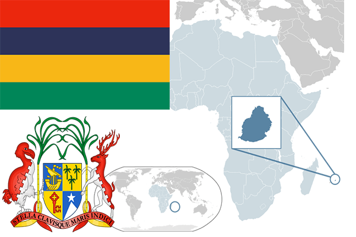

To`liq nomi: Mavrikiy Respublikasi
Region: Hind okeani
Qonunchilik shakli: Unitar Parlamentar Respublika
Mustaqillik kuni: 12 March 1992 (Birlashgan Qirollikdan)
Poytaxt: Port Luis
Maydoni: 2,040 km2
Chegaradosh davlatlari: Yo’q
Aholisi: 1,262,132 (2016-yil)
Aholi zichligi: 618.24/km2
Aholining o`rtacha yoshi: 75.17 yil
Rasmiy tili: -
Dini: 48,5% hinduizm, 32,7% xristian,17,2% islom va mahalliy dinlar.
Pul birligi: Mavrikiy rupisi
Telefon prefiksi: +230
Internet domen: .mu
Xalqaro tashkilotlarga a`zoligi: -
Dengiz va okeanlarga chiqishi: Hind okeani
YIM: Butun: $27.5 mlrd.Jon boshiga: $21,74
Yirik shaharlari: Port-Luis, Moka, Grand Port, Savanne